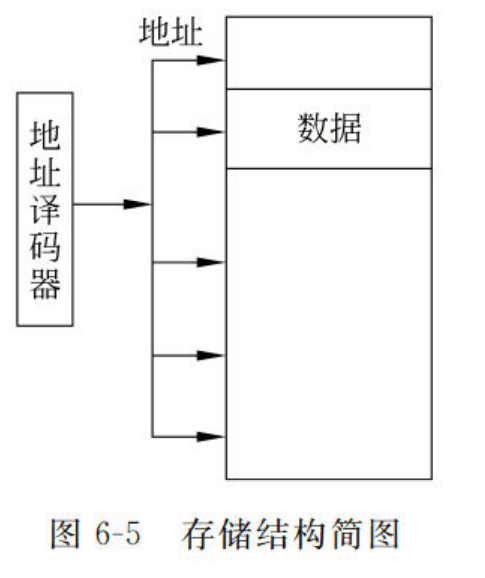
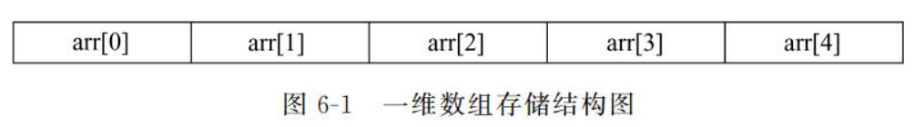
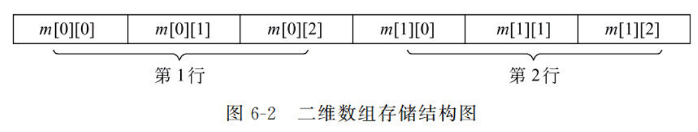

06 指针和数组
一、指针
直接的地址操作手段，可以灵活方便有效地组织和表达复杂数据结构，动态内存分配。
1.1 内存访问方式：
存储单元的编号称为地址，存储单元的基本单位是字节1Byte（8bits） C++通过变量名或地址访问内存。 在不同函数之间传送大量数据时，如果不传递变量的值，只传递变量的地址，就会减少系统开销，提高效率。指针类型变量就是专门用于存放内存地址的变量类型。 
1.2 指针类型变量
1.2.1 *和&运算符
*称为解析，表示获取指针所指向的变量的值 &称为取地址，用来获得一个对象的地址
1.2.2 基本语法
指针的声明：
int *ptr = &a //指针的声明。这里*不表示解析，只表示定义时的必须。
const int* ptr1 = &a //常量指针，ptr指针不能改变操作改变内存a的值。
int *const ptr2 = &a //指针常量，ptr指针不能改变
void *pv //pv可以指向任何类型，一般在数据类型不确定时使用
1.2.3 指针运算
指针是一种数据类型，可以参与运算。运算包括：算数运算，关系运算，赋值运算
算数运算：
指针p1与整数n1，p1+n1表示p1后第n1个数的地址
0指针是一个空指针，int *ptr = 0
关系运算：
若两个指针指向同一个地址，则两个指针相等
其他情况下指针的关系运算没有意义。
赋值运算：
指针初始化时最好给它赋值，否则它的值指向不确定。没有有效地址时也应让指针指向0。
1.2.4 指针传参
当有大量数据在函数间传递时，使用指针只传递其地址可以减小内存开销，同时也能实现参数双向传递。
1.2.5 函数指针、对象指针
指针可以指向任何东西，指向函数时指向标识符所在内存，调用该标识符即可调用函数。 指向对象的指针通常是希望通过动态内存管理，改变对象的默认生存期。
1.2.6 指针函数
由于c++不能直接返回数组，但可以返回数组的指针。所以定义指针函数，即返回值为指针的函数，使它返回一个数组的地址。其中数组要以static形式，否则局部数组在函数调用后会销毁，地址便不再有效。
1.3 指针与引用
1.3.1 指针和引用的区别
指针实际上是一种变量类型，存储变量的内存地址，其本身也需求内存空间去存储 引用实际上是一种别名，实质是一种指针常量 指针非常灵活，但操作复杂，而且容易出现野指针，使程序不安全。 引用则较为死板，只能对一个变量起一次别名，但能让程序更安全
1.3.2 指针传递与引用传递
指针传递的本质还是一种值传递，传递进去的是变量的地址，可以对传进去的参数进行任意的操作，但注意是局部变量。 引用传递的本质是对原数据的操作，不能修改引用的地址。 两者都能将传数据变为传数据地址，实现双向修改。但仅完成该目的，引用更安全、更简单。
1.4 内存分配
1.4.1 动态内存分配（堆）
在c++程序运行过程中，由程序员手动申请和释放的存储单元也成为堆对象。 动态内存分配主要用在数组分配上，在不知道数组多大时声明数组可能造成浪费或不足。 new函数：new运算会创建一个指向新分配内存首地址的类型的指针，通过这个指针可以访问堆对象 delete函数：释放指针所指向的内存空间
int* ptr = NULL; //先定义一个指向所需变量类型的空指针
ptr = new int[20]; //等需要时再分配ptr所指向的内存大小
delete[] ptr; //删除ptr所指向的数组
1.4.2 自动内存分配（栈）
栈的作用是存储局部变量，实现函数调用。栈的内存自动分配回收，局部变量和函数参数存储在栈，一旦变量作用域失效时就会自动出栈，释放存储空间。
1.4.3 静态存储区
static，静态变量与全局变量时相似的，不会随着函数的调用和退出而发生变化。 static修饰类的成员变量和成员函数，可以使其成为类的一部分，而不是对象的一部分。
1.4.4 常量存储区
const，常量定义时必须赋值，常量存储区不允许修改。
二、指针与数组
2.1 数组的存储
  数组是一列连续存储在内存空间中的数据，指针的加减运算恰好适合处理这样的数据。
2.2 数组的初始化
静态初始化：02章已记录过 动态初始化：利用动态内存分配，进行数组的初始化
2.3 数组的遍历
begin和end函数，begin指向数组首元素的指针，end指向数组尾元素的指针。 同时使用begin和end可以方便地遍历数组